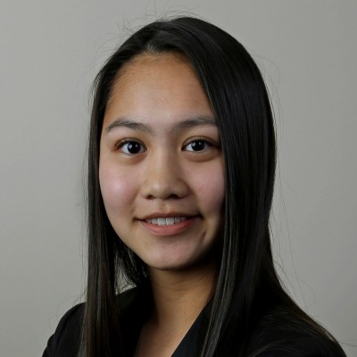
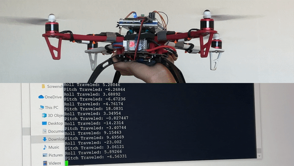
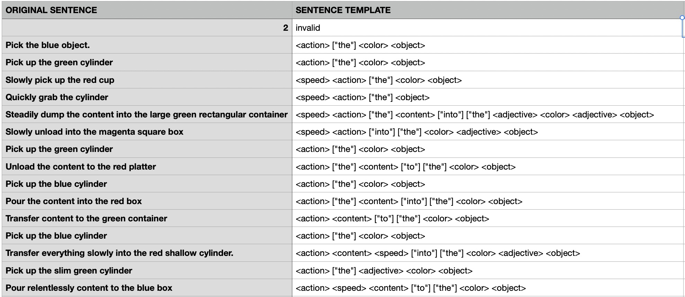
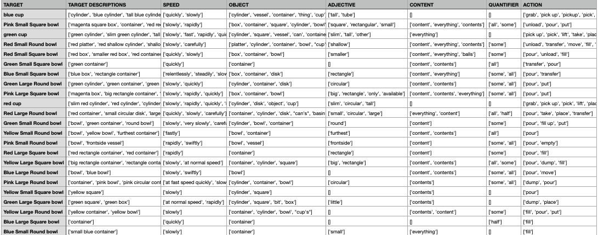
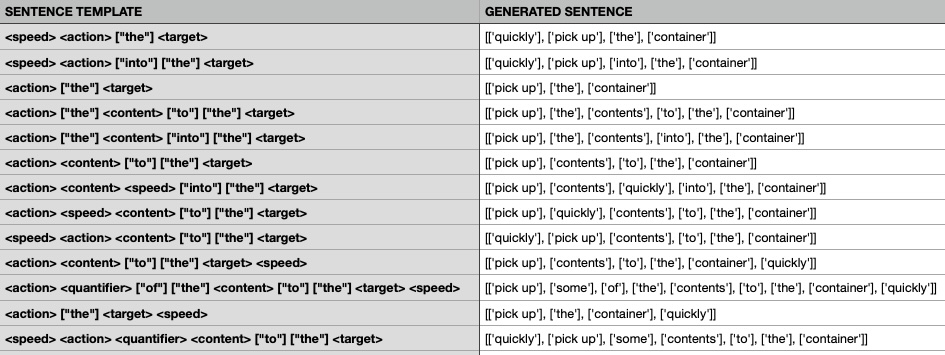
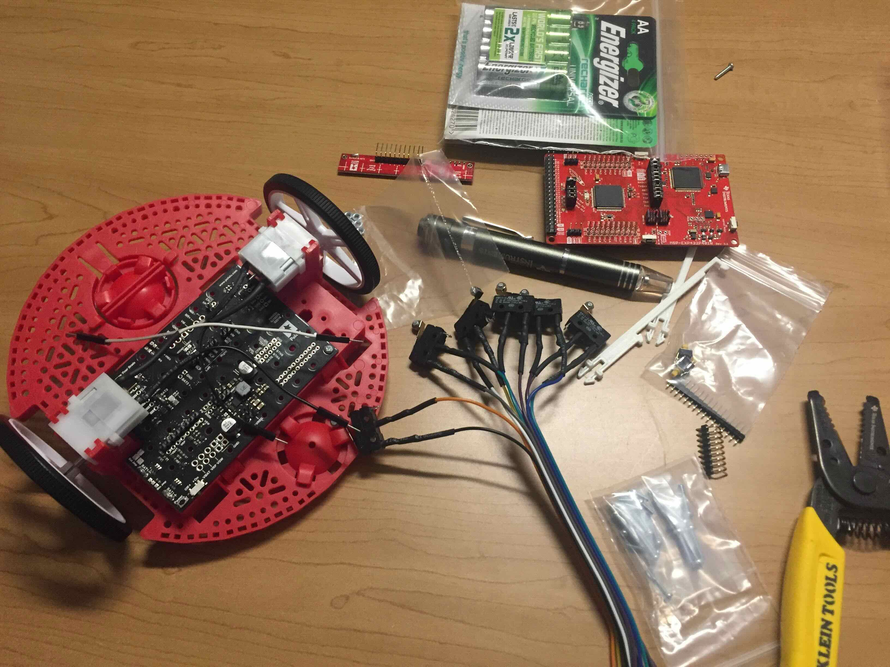
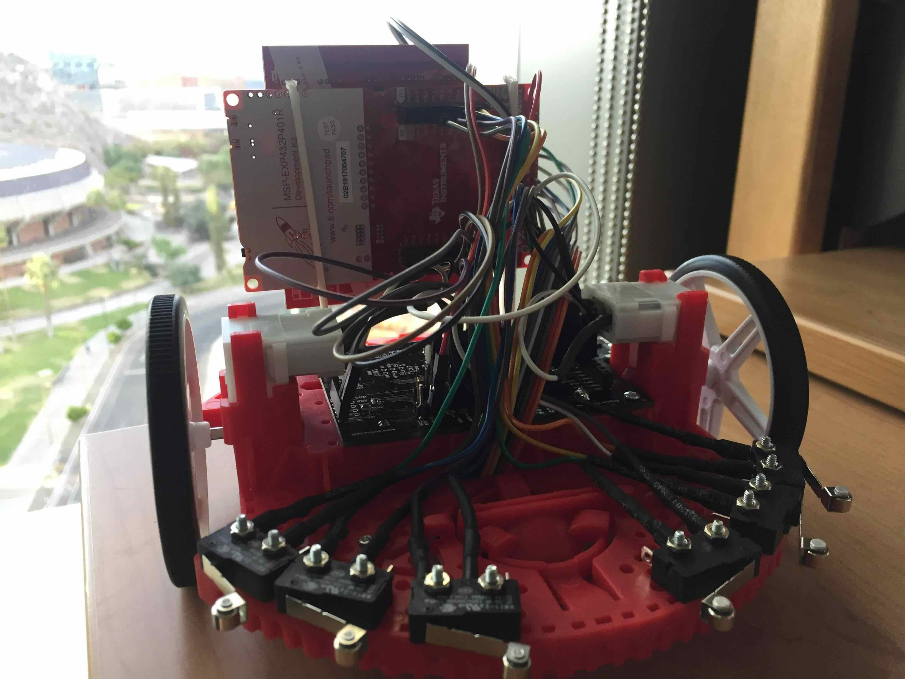
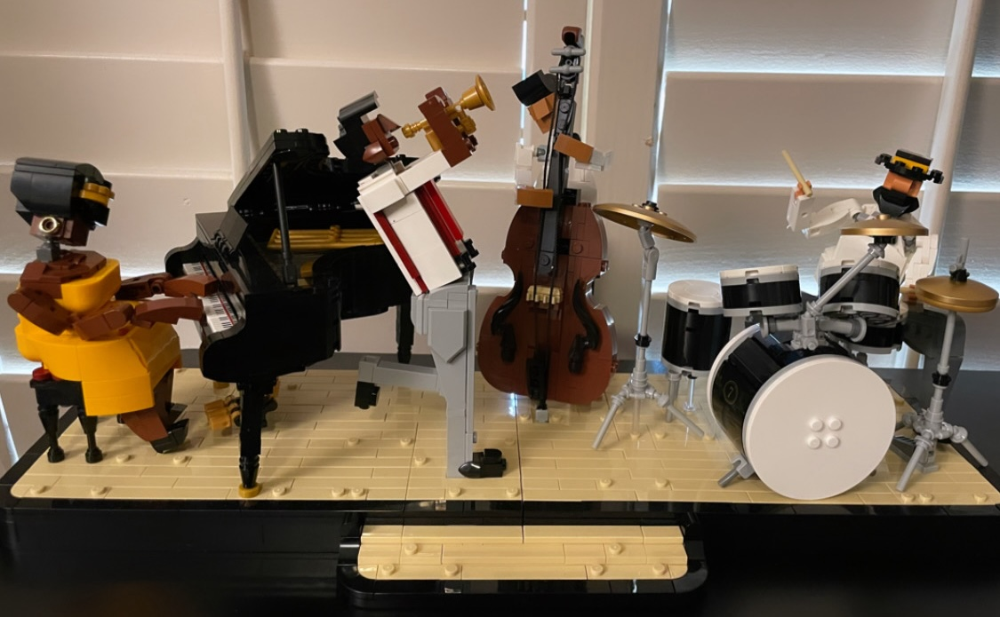

Hi! I'm Josie 😊

I started coding nearly a decade ago and have a Masters and Bachelors in Computer Science. With a background spanning software, hardware, product management, design, and beyond, I am able to provide solutions to new challenges and contribute effectively to diverse teams and projects.
Throughout the years, I have gained unique experiences as a Product Development Engineer working on 3 Intel Network Communications and I/O products with teams around the world, as a Mathematics Instructor's Aide helping students with their understanding of math, as a Research Intern analyzing copy number variation to increase the diagnostic rate for rare childhood disorders, and as someone wearing several hats in the restaurant industry as a dishwasher, delivery driver, hostess, videographer, and photographer. With all these experiences, I have cultivated a strong work ethic enriched by curiosity, creativity, and collaboration.
Software | Hardware | Product Management
Programming Languages:Java, C, C++, C#, Python, Swift, JavaScript [React, Angular, JQuery], TypeScript, PHP
Big Data | Machine Learning:
Google Colab, Jupyter Notebook, AWS, Hadoop, Spark, Kafka, Cassandra, Scala, MongoDB, Snowflake, MySQL, SpringBoot, PostgreSQL, NoSQL, APIs, JSON, XML, Node.js, Numpy, Pandas, Tensorflow, Keras, Matplotlib, Scikit Learn, Flask
Visualization | Design | Audio:
HTML, CSS, UI/UX, Microsoft Power BI, Tableau, Figma, Adobe Photoshop, GarageBand
Operating Systems:
Unix/Linux, iOS, Windows
Project Management:
GitHub, JIRA, Trello, Agile, Scrum
Education
Masters in Computer Science, Arizona State University
● Accelerated Masters Program (4+1)
Bachelor of Science in Computer Science, Arizona State University
● Summa Cum Laude, 3.96 GPA
● New American University Scholar - President's Award, Engineers from Day One, Dean's Advisory Council, Han Hartjens, NCWIT Arizona Affiliate Award, State Farm Scholars
Selected Coursework: Data Structures and Algorithms, Database Management, Data Visualization, Data Processing at Scale, Statistical Machine Learning, Knowledge Representation in AI, Information Assurance, Bio-Inspired Computing, Human Computer Interaction, Software Verification/Validation/Test, Engineering Blockchain Applications, Software Engineering, Probability and Statistics, Calculus III, Applied Linear Algebra, Discrete Math
High School Diploma, Xavier College Preparatory
● Robotics Co-President, Chinese Club President, Toastmasters Officer, Tech Advisor, National Honor Society, Mu Alpha Theta, Helios Scholars at TGen, NCWIT (National Center for Women & Information Technology)
● Accelerated Masters Program (4+1)
Bachelor of Science in Computer Science, Arizona State University
● Summa Cum Laude, 3.96 GPA
● New American University Scholar - President's Award, Engineers from Day One, Dean's Advisory Council, Han Hartjens, NCWIT Arizona Affiliate Award, State Farm Scholars
Selected Coursework: Data Structures and Algorithms, Database Management, Data Visualization, Data Processing at Scale, Statistical Machine Learning, Knowledge Representation in AI, Information Assurance, Bio-Inspired Computing, Human Computer Interaction, Software Verification/Validation/Test, Engineering Blockchain Applications, Software Engineering, Probability and Statistics, Calculus III, Applied Linear Algebra, Discrete Math
High School Diploma, Xavier College Preparatory
● Robotics Co-President, Chinese Club President, Toastmasters Officer, Tech Advisor, National Honor Society, Mu Alpha Theta, Helios Scholars at TGen, NCWIT (National Center for Women & Information Technology)
Experience
Product Development Engineer at Intel
● Worked on 3 Intel Network Communications and I/O products, including Intel's first ASIC IPU
● Owned test module and defined product test plan
● Wrote and debugged scripts to automate tests and analyze coverage for digital logic design and manufactured product using Python, Shell, Perl, and Verilog
● Generated test patterns (ATPG) and used automatic test equipment (ATE) for Scan design for test (DFT) verification and validation processes in pre-silicon and post-silicon
● Collaborated with cross-functional teams based in US, Malaysia, India, and Ireland
● Promoted to Grade 5 Masters Level Engineer after graduating with Bachelors
Software Engineer Research Aide at ASU Meteor Studio
● Worked on virtual ASU campus tour to show each campus in 360 form using C# and JSON in Unity
● Captured photospheres with Insta360 Spherical VR 8K Camera, refining them with Adobe Photoshop
Mathematics Instructional Aide at ASU
● Developed teaching skills by helping students with their understanding of material
● Assisted mathematics professors for 3 math courses with grading and delivering feedback
Research Intern at The Translational Genomics Research Institute (TGen)
● One of the youngest interns out of 45 selected from 500+ high school and college students
● Researched and analyzed copy number variation in rare childhood disorders to increase diagnostic rate under Dr. Isabelle Schrauwen and TGen's Center for Rare Childhood Disorders
● Checked over 50 families without a previous diagnosis, and verified CNVs with B allele frequency (BAF) plots, Log2 fold change, and integrative genomic viewer (IGV)
● Patients with rare childhood disorders are likely to contain a disorder-inflicting copy number variant. Copy number variations (CNVs) occur when a large genomic region is deleted or multiplied. Analysis of CNVs in affected patients can lead to an increased diagnostic rate and a treatment plan to prolong lifespan.
● Worked on 3 Intel Network Communications and I/O products, including Intel's first ASIC IPU
● Owned test module and defined product test plan
● Wrote and debugged scripts to automate tests and analyze coverage for digital logic design and manufactured product using Python, Shell, Perl, and Verilog
● Generated test patterns (ATPG) and used automatic test equipment (ATE) for Scan design for test (DFT) verification and validation processes in pre-silicon and post-silicon
● Collaborated with cross-functional teams based in US, Malaysia, India, and Ireland
● Promoted to Grade 5 Masters Level Engineer after graduating with Bachelors
Software Engineer Research Aide at ASU Meteor Studio
● Worked on virtual ASU campus tour to show each campus in 360 form using C# and JSON in Unity
● Captured photospheres with Insta360 Spherical VR 8K Camera, refining them with Adobe Photoshop
Mathematics Instructional Aide at ASU
● Developed teaching skills by helping students with their understanding of material
● Assisted mathematics professors for 3 math courses with grading and delivering feedback
Research Intern at The Translational Genomics Research Institute (TGen)
● One of the youngest interns out of 45 selected from 500+ high school and college students
● Researched and analyzed copy number variation in rare childhood disorders to increase diagnostic rate under Dr. Isabelle Schrauwen and TGen's Center for Rare Childhood Disorders
● Checked over 50 families without a previous diagnosis, and verified CNVs with B allele frequency (BAF) plots, Log2 fold change, and integrative genomic viewer (IGV)
● Patients with rare childhood disorders are likely to contain a disorder-inflicting copy number variant. Copy number variations (CNVs) occur when a large genomic region is deleted or multiplied. Analysis of CNVs in affected patients can lead to an increased diagnostic rate and a treatment plan to prolong lifespan.
Machine Learning
Modeling Drone Flight:
● Using in-house data collected from drone flight stored on AWS S3, created machine learning models with AWS EC2, Jupyter Notebook, Tensorflow to predict drone flight direction
● Using in-house data collected from drone flight stored on AWS S3, created machine learning models with AWS EC2, Jupyter Notebook, Tensorflow to predict drone flight direction

Classifying Numbers with MNIST
● Extracted relevant features from the training dataset, estimated parameters for a 2-D normal distribution for each digit, and experimented with dataset to identify digits with Naïve Bayes classifier, neural networks, and deep learning
● Extracted relevant features from the training dataset, estimated parameters for a 2-D normal distribution for each digit, and experimented with dataset to identify digits with Naïve Bayes classifier, neural networks, and deep learning

Web Application
● Developed a machine learning curriculum using information learned from experiments and created a web application using HTML, CSS, and JavaScript for students to learn machine learning concepts
● Developed a machine learning curriculum using information learned from experiments and created a web application using HTML, CSS, and JavaScript for students to learn machine learning concepts
Key Concepts:
● Linear Algebra, Probability and Stats, Calculus
● Maximum likelihood estimation
● Naive Bayes classification
● Logistic regression
● Support vector machines
● Probabilistic graphical models
● Mixture models
● K-means clustering
● Spectral clustering
● Dimensionality reduction
● Principal component analysis
● Neural networks and deep learning
● Convolutional neural networks
Data Visualization
Various Salary Projects with US and Around the World:
● Determined trends in the factors that contribute to income across the world
● Used statistical models to created visualizations to support conclusions.
● Wrote up user stories, extracted relevant information using SQL queries, transformed and loaded data.
European Weather Forecast: Displays weather information for European Cities/Country for the next 7 days, retrieving real-time data from 7Timer! API.
Africa GDP: Visualizes Africa's Gross Domestic Product (GDP) data from 1960-2011
Movie Database: Displays list of movies. Can load seeded data and contains additional functionality to add and make changes with create, read, update, and delete (CRUD).
Key Concepts:
● Efficient query processing
● Indexing structures
● Distributed database design
● Parallel query execution
● Concurrency control in distributed parallel database systems
● Data management in cloud computing environments
● Data management in Map/Reduce-based
● NoSQL database systems
● Data transformations
● Exploratory querying
● Statistical graphics
● Time series analysis
● Exploratory spatial data analysis
Natural Language Processing
● This project aims solve the issue of generating enough data to train a robot to partake in a series of tasks by collecting commands from people and then applying natural language processing to create a synthetic language generator.
● First, a full stack web application was created to present animated videos of a robot performing actions with a data-collection interface in which users type in potential commands for the robot.
● Then, using the collected commands, a synthetic language generator was created to generate additional commands by analyzing patterns, extracting a grammar, and using keywords from the dataset.
● Project with Simon Stepputtis and Heni Ben Amor at ASU's Interactive Robotics Lab

These are the original sentences taken from the database converted to sentence templates.

Words used in the original sentences are divided into categories.

Using the sentence templates and categorized words, more sentences are created with the synthetic language generator.
Graphical User Interface
Fireworks for 4th of July: Displays two fireworks with customization for color, speed, and number of beams.
Line Drawing Tool: A fun tool where you can only draw with lines and can modify color and size. No need to worry about imperfections as it is capable of going back a step to undo and erase.
A Fun Game - Duck vs Bee: This duck is trying to make its way back home, but it's deathly allergic to bees. If the duck gets stung, the game ends. But if the duck arrives home in time, then you've won the game!
Tinkering
As part of a weeklong bootcamp at ASU, I got to build a robot and use it to apply an entrepreneurial mindset. 

Constructing A Robot: Soldering, wiring, programming the arduino to make the robot move autonomously.

3D Printing: Designed a pumpkin using Fusion360 in the spirit of Halloween. The inside also lights up with a small battery and mini LED light.
Graphic Design and Photoshop: One example is my logo on the top left corner, which represents my initials (JT) in the shape of pi.
Music Production
Started playing piano around the age of 5. Had about 6 to 7 years of lessons, and have been playing for fun to this day!
Here are two music compositions created with a Yamaha Keyboard and GarageBand:
Chopin is my favorite composer. Here's my cover of one of his pieces.
Contact Me
Email: josie.is.very.creative@gmail.comConnect with me on LinkedIn!
© Copyright Josie - All Rights Reserved